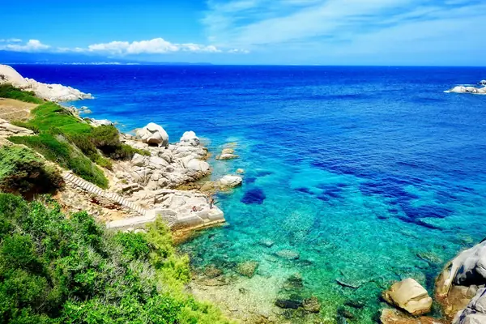

Vermentino grape

Photo: Massimo Virgilio on Unsplash
Vermentino is a white grape known for citrus, pear, herbs. Its best-known homes are Sardinia, Liguria.
Primary flavours
- Citrus
- Pear
- Herbs
- Lemon
Taste profile
Origin and history
Probably spread around the western Mediterranean from Spain or Liguria; DNA shows Pigato and Favorita are the same grape.
Where it grows
Sardinia (Gallura), Liguria, coastal Tuscany (Bolgheri, Maremma), Corsica, Provence, Languedoc and Australia.
Structure
Medium body with fresh to moderate acidity; dry and usually unoaked, with a gentle bitter finish.
Aromas, young and aged
Young: lemon, lime, pear, green apple, fennel and Mediterranean herbs. With age: honey, almond and saline notes.
Ageing
Most is best within 1–3 years; top Vermentino di Gallura can age 5–8 years.
Also known as
Rolle (France), Vermentinu (Corsica), Pigato (Liguria), Favorita (Piedmont).
Good to know
Vermentino di Gallura is Sardinia's only DOCG; in Provence, as Rolle, it is a key grape in many rosés.
Wine regions for Vermentino
Vermentino wines to try
Real bottles from The Wine Library.
Tenuta dell'Ornellaia Poggio alle Gazze dell'Ornellaia
Tuscany · Toscana IGT · Sauvignon Blanc, Vermentino, Viognier
Ornellaia's white: aromatic, fresh and gently textured.
Food: Fish, pasta
Antichi Poderi di Jerzu Telavè Vermentino
Sardinia · Vermentino di Sardegna · Vermentino
Fresh Sardinian Vermentino with citrus and Mediterranean herbs.
Food: Seafood, salads
Antonella Corda Vermentino di Sardegna
Sardinia · Vermentino di Sardegna · Vermentino
Elegant grower Vermentino: saline, floral and precise.
Food: Fish, bottarga pasta
Cantine Lunae Etichetta Nera Vermentino
Liguria · Colli di Luni DOC · Vermentino
Sunny yet briny Vermentino with ripe citrus, Mediterranean scrub and a gently bitter almond close.
Food: Trofie al pesto, fritto misto
Food to pair with Vermentino
- Grilled sea bass: Delicate grilled fish wants crisp coastal whites; Albariño, Vermentino and Assyrtiko bring citrus and a sea-spray freshness.
- Spaghetti alle vongole: Clams, garlic and chilli suit crisp, saline southern Italian whites that mirror the briny juices and lift the olive oil.
- Bouillabaisse: Marseille's saffron fish stew is traditionally paired with local Provence wines: dry Bandol rosé or a herbal Cassis white.
- Caprese salad: Ripe tomatoes, mozzarella and basil need a light, fresh Italian white whose acidity mirrors the tomato and refreshes the cheese.
- Crab linguine: Sweet crab, lemon and chilli are lifted by a crisp coastal white with citrus and a saline finish.
- Linguine al pesto: Basil, garlic and pine nuts love herbal whites; Ligurian Vermentino is the local match for pesto's home region.
- Salade niçoise: Dry Provençal rosé is the local match for olives, anchovies and eggs, with enough freshness for the vinaigrette.
- Saltimbocca alla romana: Delicate veal with salty prosciutto and sage suits a fresh Italian white or a light, savoury Chianti Classico.
Appellations that use Vermentino
- Cinque Terre DOC · Liguria · White, Sweet
- Cinque Terre Sciacchetrà DOC · Liguria · Sweet
- Colli di Luni DOC · Liguria · White, Red
- Colline di Levanto DOC · Liguria · White, Red
- Golfo del Tigullio-Portofino DOC · Liguria · White, Red
- Riviera Ligure di Ponente DOC · Liguria · White, Red, Sweet
- Val Polcevera DOC · Liguria · White, Red
- Bolgheri DOC · Tuscany · Red, White, Rosé
- Candia dei Colli Apuani DOC · Tuscany · White
- Capalbio DOC · Tuscany · White, Red
- Maremma Toscana DOC · Tuscany · White, Red, Rosé, Sparkling, Sweet
- Montecarlo DOC · Tuscany · White, Red, Sweet
- Montecucco DOC · Tuscany · Red, White
- Monteregio di Massa Marittima DOC · Tuscany · White, Red
Similar white grapes
Explore all grapes in the interactive guide
The Wine Reference newsletter
New wines, stories and career guides, one email a week at most.
Over 18s only. Unsubscribe any time with one click. Your email is stored securely by Kit and never shared.
Support The Wine Reference
This guide is free, with no paywall. If it helped you choose a bottle, you can buy me a glass and keep it growing.
🍷 Buy me a glass